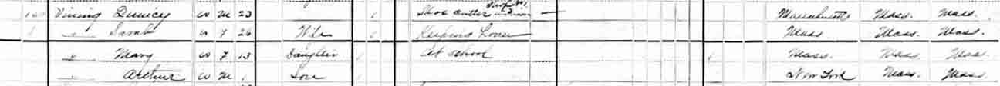
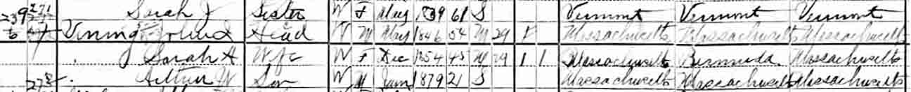
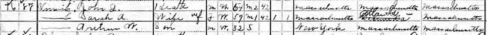
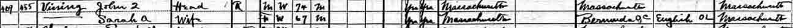

Census Data
| 1870 | 1880 | 1890 | 1900 | 1910 | 1920 | 1930 | |
| John Quincy Vining | ? | 23 [sic] | ? | 54 | 64 | 74 | ? |
| Sarah A. ([…]) Vining | ? | 26 [sic] | ? | 45 | 57 | 67 | ? |
| [Mary Vining ?] | ? | 13 | [living? in separate household | ||||
| Arthur W. Vining | ? | 1 | ? | 21 | 32 | married and living in separate household |



